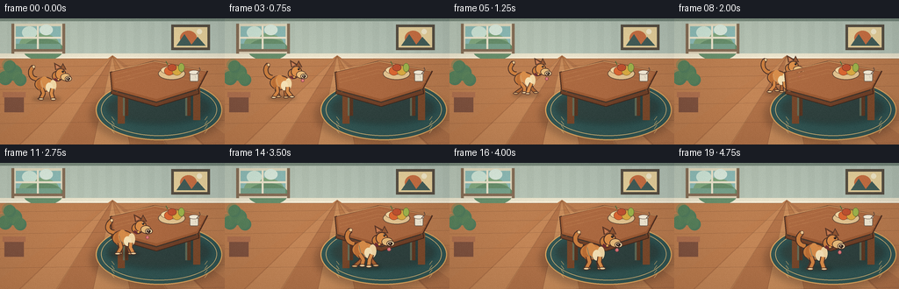
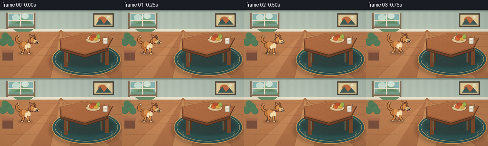

CODING AGENTS AS PIXEL WORLD MODELS
traex/DeepSeek-V4.1-Flash · dynamic_spatial_relationship_0000
点击播放 · 原生 RGB 像素
逐轮保存的候选
回放视频、检查图与代码变化。
每份候选均可单独播放。实际图片检查记录在下方工具轨迹中。
候选 01播放与检查图
点击播放 · 原生 RGB 像素


展开代码变化
--- 上一保存版本
+++ 本次保存版本
@@ -0,0 +1,599 @@
+from __future__ import annotations
+
+import math
+import subprocess
+from pathlib import Path
+
+import numpy as np
+from PIL import Image, ImageDraw, ImageFilter
+
+import artifact_io
+
+
+HERE = Path(__file__).resolve().parent
+W, H = 256, 144
+N, FPS = 20, 4.0
+S = 4 # Draw at 4x for clean, softly antialiased contours.
+
+
+def sc(value: float) -> int:
+ return int(round(value * S))
+
+
+def xy(x: float, y: float) -> tuple[int, int]:
+ return sc(x), sc(y)
+
+
+def box(x0: float, y0: float, x1: float, y1: float) -> tuple[int, int, int, int]:
+ return sc(x0), sc(y0), sc(x1), sc(y1)
+
+
+def polygon(draw: ImageDraw.ImageDraw, points, fill, outline=None, width=1):
+ draw.polygon([xy(x, y) for x, y in points], fill=fill, outline=outline, width=sc(width))
+
+
+def line(draw: ImageDraw.ImageDraw, points, fill, width=1, joint="curve"):
+ draw.line([xy(x, y) for x, y in points], fill=fill, width=max(1, sc(width)), joint=joint)
+
+
+def ellipse(draw: ImageDraw.ImageDraw, bounds, fill, outline=None, width=1):
+ draw.ellipse(box(*bounds), fill=fill, outline=outline, width=sc(width))
+
+
+def rounded(draw: ImageDraw.ImageDraw, bounds, radius, fill, outline=None, width=1):
+ draw.rounded_rectangle(
+ box(*bounds), radius=sc(radius), fill=fill, outline=outline, width=sc(width)
+ )
+
+
+def bezier(points, steps=16):
+ """Sample a cubic Bezier curve."""
+ p0, p1, p2, p3 = points
+ result = []
+ for i in range(steps + 1):
+ t = i / steps
+ u = 1.0 - t
+ x = u**3 * p0[0] + 3 * u * u * t * p1[0] + 3 * u * t * t * p2[0] + t**3 * p3[0]
+ y = u**3 * p0[1] + 3 * u * u * t * p1[1] + 3 * u * t * t * p2[1] + t**3 * p3[1]
+ result.append((x, y))
+ return result
+
+
+def make_floor() -> Image.Image:
+ image = Image.new("RGB", (W * S, H * S), "#a56f49")
+ draw = ImageDraw.Draw(image, "RGBA")
+
+ # Wall and architectural trim.
+ draw.rectangle(box(0, 0, W, 46), fill="#aebcaf")
+ for x in range(0, W, 16):
+ draw.rectangle(box(x, 0, x + 8, 44), fill=(226, 231, 218, 22))
+ draw.rectangle(box(0, 0, W, 3), fill="#748579")
+ draw.rectangle(box(0, 40, W, 45), fill="#e5dfc9")
+ draw.rectangle(box(0, 44, W, 48), fill="#755f4e")
+ draw.rectangle(box(0, 44, W, 45.4), fill="#f3e9d3")
+
+ # Window with a bright, slightly hazy garden beyond it.
+ draw.rectangle(box(15, 6, 72, 39), fill="#d8d2b9")
+ draw.rectangle(box(18, 9, 69, 36), fill="#87b5b2")
+ draw.ellipse(box(22, 17, 67, 42), fill="#7ca37c")
+ draw.ellipse(box(26, 23, 72, 48), fill="#628a69")
+ draw.rectangle(box(18, 29, 69, 37), fill="#729c88")
+ draw.ellipse(box(25, 9, 42, 23), fill="#c7dfd3")
+ draw.ellipse(box(45, 7, 60, 19), fill="#d4e5da")
+ draw.rectangle(box(42, 8, 44, 38), fill="#e6dfc9")
+ draw.rectangle(box(17, 21, 70, 23), fill="#e6dfc9")
+ draw.rectangle(box(13, 35, 74, 40), fill="#7f6853")
+ draw.rectangle(box(16, 38, 72, 40), fill="#d7cbb4")
+ draw.rectangle(box(13, 6, 16, 40), fill="#7f6853")
+ draw.rectangle(box(71, 6, 74, 40), fill="#7f6853")
+
+ # A small framed print balances the window.
+ draw.rectangle(box(195, 7, 239, 36), fill="#574f43")
+ draw.rectangle(box(198, 10, 236, 33), fill="#e5cf9b")
+ draw.ellipse(box(205, 14, 224, 31), fill="#c66f43")
+ draw.polygon(
+ [xy(201, 31), xy(210, 18), xy(218, 30), xy(225, 21), xy(234, 31)],
+ fill="#435d58",
+ )
+ draw.ellipse(box(224, 12, 230, 18), fill="#f2e8c9")
+
+ # Warm wood floor with perspective boards.
+ draw.rectangle(box(0, 46, W, H), fill="#b77a4e")
+ bottom_edges = [-20, 22, 64, 106, 148, 190, 232, 276]
+ colors = ["#b8794c", "#c08355", "#ae7047", "#c48959", "#b47649", "#c18455", "#ac7048"]
+ for i in range(len(bottom_edges) - 1):
+ draw.polygon(
+ [xy(128, 42), xy(bottom_edges[i], 146), xy(bottom_edges[i + 1], 146)],
+ fill=colors[i],
+ )
+ for y in (54, 65, 79, 96, 118, 144):
+ line(draw, [(0, y + 2), (W, y - 2)], fill=(82, 49, 32, 55), width=0.7)
+ for x0 in bottom_edges[1:-1]:
+ line(draw, [(128, 43), (x0, 144)], fill=(88, 52, 35, 50), width=0.65)
+ for i in range(7):
+ x = 18 + i * 35
+ y = 52 + (i % 4) * 18
+ line(draw, [(x, y), (x + 12, y + 0.4)], fill=(243, 189, 125, 32), width=0.5)
+
+ # A deep teal rug gives the dog and table a strong shared ground plane.
+ shadow = Image.new("RGBA", image.size, (0, 0, 0, 0))
+ sd = ImageDraw.Draw(shadow, "RGBA")
+ sd.ellipse(box(103, 76, 255, 143), fill=(48, 31, 24, 70))
+ shadow = shadow.filter(ImageFilter.GaussianBlur(sc(4)))
+ image = Image.alpha_composite(image.convert("RGBA"), shadow).convert("RGB")
+ draw = ImageDraw.Draw(image, "RGBA")
+ ellipse(draw, (109, 70, 253, 139), "#315452", "#d6a15d", 1.2)
+ ellipse(draw, (115, 74, 247, 134), None, "#d7b475", 0.65)
+ for offset in (-28, 0, 28):
+ polygon(
+ draw,
+ [(181 + offset, 75), (184 + offset, 79), (181 + offset, 83), (178 + offset, 79)],
+ (223, 190, 120, 38),
+ )
+ for x in (127, 236):
+ for y in range(112, 132, 5):
+ line(draw, [(x, y), (x + (3 if x < 180 else -3), y + 4)], "#d7b475", 0.6)
+
+ # Baseboard highlights and a little potted plant at the left rear.
+ draw.rectangle(box(5, 88, 27, 107), fill="#7b4f3d")
+ draw.rectangle(box(3, 84, 29, 90), fill="#a96c4c")
+ for dx, dy, radius in [(-2, -16, 8), (8, -22, 9), (15, -14, 7), (3, -29, 7)]:
+ ellipse(draw, (8 + dx - radius, 84 + dy - radius, 8 + dx + radius, 84 + dy + radius), "#4c7659")
+ ellipse(
+ draw,
+ (6 + dx - radius, 82 + dy - radius, 6 + dx + radius, 82 + dy + radius),
+ (91, 130, 87, 100),
+ )
+
+ return image
+
+
+def make_table_overlay() -> Image.Image:
+ overlay = Image.new("RGBA", (W * S, H * S), (0, 0, 0, 0))
+ shadow = Image.new("RGBA", overlay.size, (0, 0, 0, 0))
+ sd = ImageDraw.Draw(shadow, "RGBA")
+ sd.ellipse(box(121, 82, 240, 121), fill=(42, 25, 19, 82))
+ shadow = shadow.filter(ImageFilter.GaussianBlur(sc(3.2)))
+ overlay = Image.alpha_composite(overlay, shadow)
+ draw = ImageDraw.Draw(overlay, "RGBA")
+
+ # Back legs, front legs, and subtle floor contact shadows.
+ draw.rounded_rectangle(box(140, 73, 146, 111), radius=1.5, fill="#563421")
+ draw.rounded_rectangle(box(211, 70, 217, 111), radius=1.5, fill="#5e3924")
+ draw.rounded_rectangle(box(134, 84, 142, 120), radius=1.8, fill="#75462a")
+ draw.rounded_rectangle(box(220, 80, 228, 116), radius=1.8, fill="#7b4a2c")
+ draw.rectangle(box(140, 73, 142, 111), fill=(224, 159, 91, 75))
+ draw.rectangle(box(211, 70, 213, 111), fill=(229, 165, 96, 65))
+
+ # Chunky, slightly rounded table apron and top.
+ polygon(
+ draw,
+ [(127, 78), (178, 93), (226, 79), (227, 86), (178, 101), (126, 86)],
+ "#6f4028",
+ "#3f281d",
+ 1.1,
+ )
+ polygon(
+ draw,
+ [(125, 61), (176, 48), (237, 60), (226, 81), (178, 96), (127, 82)],
+ "#9a5a34",
+ "#4d2e21",
+ 1.2,
+ )
+ polygon(
+ draw,
+ [(128, 61), (176, 50), (234, 61), (224, 78), (178, 92), (130, 79)],
+ "#aa6840",
+ None,
+ )
+ # Wood grain follows the tabletop perspective.
+ for dy, alpha in [(-9, 58), (-5, 42), (0, 38), (5, 45), (9, 32)]:
+ line(
+ draw,
+ [(131, 64 + dy), (175, 53 + dy), (229, 64 + dy)],
+ (244, 174, 109, alpha),
+ 0.55,
+ )
+ line(draw, [(128, 60), (176, 49), (235, 60)], (255, 205, 137, 105), 1.0)
+ line(draw, [(226, 81), (178, 96), (127, 82)], (73, 41, 27, 155), 1.0)
+
+ # Tabletop still life: fruit bowl, orange, pear, and a small cup.
+ ellipse(draw, (180, 56, 211, 70), "#e1c18e", "#5c4535", 0.7)
+ ellipse(draw, (183, 54, 209, 64), "#f0d6a2", "#72533c", 0.55)
+ ellipse(draw, (187, 55, 198, 65), "#d96632", "#874027", 0.55)
+ ellipse(draw, (196, 54, 207, 65), "#d9aa42", "#8c6b2e", 0.55)
+ ellipse(draw, (191, 52, 201, 60), "#bd5130", "#733825", 0.5)
+ line(draw, [(191, 53), (189, 49)], "#486c3c", 0.9)
+ ellipse(draw, (203, 51, 210, 61), "#9db24c", "#5c6c32", 0.5)
+
+ rounded(draw, (216, 61, 226, 72), 1.5, "#eee4ce", "#705f50", 0.65)
+ ellipse(draw, (215, 59, 227, 64), "#f7edd8", "#6d5b4d", 0.55)
+ line(draw, [(224, 63), (228, 59), (227, 56)], "#6b5142", 1.0)
+ line(draw, [(222, 66), (223, 68)], "#b9aa94", 0.55)
+
+ return overlay
+
+
+def dog_leg(
+ draw: ImageDraw.ImageDraw,
+ origin,
+ scale,
+ hip,
+ foot,
+ bend,
+ color,
+ paw_color,
+ behind=False,
+):
+ ox, oy = origin
+
+ def p(point):
+ return ox + point[0] * scale, oy + point[1] * scale
+
+ hip_p = p(hip)
+ foot_p = p(foot)
+ knee_p = p((hip[0] + bend[0], hip[1] + bend[1]))
+ points = [hip_p, knee_p, foot_p]
+ line(draw, points, "#4b3026", 5.0 * scale if behind else 5.4 * scale)
+ line(draw, points, color, 3.1 * scale if behind else 3.6 * scale)
+ px, py = foot_p
+ ellipse(
+ draw,
+ (px - 3.2 * scale, py - 1.4 * scale, px + 3.6 * scale, py + 1.6 * scale),
+ paw_color,
+ "#4b3026",
+ 0.65,
+ )
+
+
+def draw_dog(frame: int, x: float, y: float, scale: float, run: float) -> Image.Image:
+ overlay = Image.new("RGBA", (W * S, H * S), (0, 0, 0, 0))
+
+ # Soft contact shadow is kept separate so the dog's legs stay crisp.
+ shadow = Image.new("RGBA", overlay.size, (0, 0, 0, 0))
+ sd = ImageDraw.Draw(shadow, "RGBA")
+ sd.ellipse(
+ box(x - 18 * scale, y - 2.4 * scale, x + 18 * scale, y + 2.4 * scale),
+ fill=(53, 35, 25, 82),
+ )
+ shadow = shadow.filter(ImageFilter.GaussianBlur(sc(1.9)))
+ overlay = Image.alpha_composite(overlay, shadow)
+ draw = ImageDraw.Draw(overlay, "RGBA")
+
+ phase = frame * 1.45
+ bob = run * 1.7 * abs(math.sin(phase))
+ oy = y - bob
+ ox = x
+ lean = run * 1.4
+ wag = math.sin(frame * 1.35) * (2.0 + run * 1.2)
+ pant = 1.0 if frame >= 15 else run * 0.25
+
+ def P(point):
+ return ox + point[0] * scale, oy + point[1] * scale
+
+ def E(bounds, fill, outline=None, width=1):
+ ellipse(
+ draw,
+ (
+ ox + bounds[0] * scale,
+ oy + bounds[1] * scale,
+ ox + bounds[2] * scale,
+ oy + bounds[3] * scale,
+ ),
+ fill,
+ outline,
+ width * scale,
+ )
+
+ def L(points, fill, width=1):
+ line(draw, [P(p) for p in points], fill, width * scale)
+
+ # Wagging tail, drawn behind the body.
+ tail_points = bezier(
+ [
+ (-12, -25),
+ (-20, -25),
+ (-23, -35 + wag),
+ (-16 + wag * 0.3, -40 + wag * 0.35),
+ ]
+ )
+ L(tail_points, "#4b3026", 6.2)
+ L(tail_points, "#c77b3d", 4.0)
+ ellipse(
+ draw,
+ (
+ P(tail_points[-1])[0] - 2.0 * scale,
+ P(tail_points[-1])[1] - 2.0 * scale,
+ P(tail_points[-1])[0] + 2.0 * scale,
+ P(tail_points[-1])[1] + 2.0 * scale,
+ ),
+ "#e9c48e",
+ "#4b3026",
+ 0.5,
+ )
+
+ # Far legs are darker to create a readable running silhouette.
+ far_swing = 7.0 * run * math.sin(phase + math.pi)
+ near_swing = 8.0 * run * math.sin(phase)
+ dog_leg(
+ draw,
+ (ox, oy),
+ scale,
+ (-7.0, -13.5),
+ (-8.0 + far_swing, -0.4 - 1.4 * run * max(0, math.sin(phase + math.pi))),
+ (2.0 - far_swing * 0.35, 6.0),
+ "#a86232",
+ "#d9ad75",
+ behind=True,
+ )
+ dog_leg(
+ draw,
+ (ox, oy),
+ scale,
+ (6.5, -13.0),
+ (8.0 - far_swing * 0.85, -0.3 - 1.6 * run * max(0, math.sin(phase))),
+ (-1.0 - far_swing * 0.3, 6.0),
+ "#a86232",
+ "#d9ad75",
+ behind=True,
+ )
+
+ # Main torso and haunch.
+ E((-15.0, -27.5, 10.0, -9.2), "#c77b3d", "#4b3026", 1.05)
+ E((-12.0, -26.8, 2.0, -9.2), "#b86c34", None)
+ E((-7.8, -28.0, 2.2, -13.0), "#d38a49", None)
+ E((-2.0, -24.0, 10.5, -9.5), "#d38a49", None)
+
+ # Cream chest and shoulder patch.
+ E((4.2, -24.0, 12.0, -10.0), "#edd3a2", None)
+ E((-1.0, -20.5, 7.5, -9.0), "#f1ddb2", None)
+ L([(-7, -23), (-5, -15), (0, -11)], (242, 207, 150, 105), 0.8)
+
+ # Neck, head, muzzle, and ears.
+ hx = lean
+ hy = -1.0 * run + 0.7 * math.sin(phase)
+ E((6.5 + hx, -35.0 + hy, 20.5 + hx, -22.0 + hy), "#c77b3d", "#4b3026", 1.0)
+ E((10.5 + hx, -38.0 + hy, 24.0 + hx, -24.0 + hy), "#d78b47", "#4b3026", 1.1)
+ E((17.0 + hx, -32.0 + hy, 29.5 + hx, -22.5 + hy), "#e4b879", "#4b3026", 0.8)
+ E((22.5 + hx, -28.5 + hy, 31.2 + hx, -22.0 + hy), "#f0d4a2", "#4b3026", 0.7)
+
+ # Ears with warm interior flaps.
+ polygon(
+ draw,
+ [
+ P((11.0 + hx, -36.0 + hy)),
+ P((9.2 + hx, -45.2 + hy + wag * 0.08)),
+ P((18.3 + hx, -40.2 + hy)),
+ ],
+ "#7c462a",
+ "#4b3026",
+ 0.8 * scale,
+ )
+ polygon(
+ draw,
+ [
+ P((16.5 + hx, -37.3 + hy)),
+ P((20.0 + hx, -44.7 + hy)),
+ P((24.5 + hx, -36.4 + hy)),
+ ],
+ "#8f5431",
+ "#4b3026",
+ 0.75 * scale,
+ )
+ polygon(
+ draw,
+ [
+ P((12.0 + hx, -37.3 + hy)),
+ P((11.3 + hx, -42.5 + hy)),
+ P((16.0 + hx, -39.3 + hy)),
+ ],
+ (224, 139, 100, 135),
+ )
+
+ # Face and collar.
+ eye_x, eye_y = 20.1 + hx, -34.1 + hy
+ ellipse(
+ draw,
+ (
+ ox + (eye_x - 1.25) * scale,
+ oy + (eye_y - 1.35) * scale,
+ ox + (eye_x + 1.25) * scale,
+ oy + (eye_y + 1.35) * scale,
+ ),
+ "#261b19",
+ )
+ ellipse(
+ draw,
+ (
+ ox + (eye_x - 0.65) * scale,
+ oy + (eye_y - 0.9) * scale,
+ ox + (eye_x - 0.05) * scale,
+ oy + (eye_y - 0.3) * scale,
+ ),
+ "#fff4d9",
+ )
+ E((24.3 + hx, -26.9 + hy, 29.0 + hx, -23.6 + hy), "#2d1e1b", None)
+ ellipse(
+ draw,
+ (
+ ox + (25.5 + hx) * scale,
+ oy + (-26.1 + hy) * scale,
+ ox + (27.0 + hx) * scale,
+ oy + (-25.0 + hy) * scale,
+ ),
+ (255, 244, 218, 160),
+ )
+ L(
+ [
+ (27.8 + hx, -23.5 + hy),
+ (25.0 + hx, -21.8 + hy),
+ (22.0 + hx, -22.8 + hy),
+ ],
+ "#4a2d24",
+ 0.75,
+ )
+ if pant > 0.1:
+ tongue_y = -21.0 + hy + 1.2 * math.sin(frame * 1.8)
+ E(
+ (23.1 + hx, tongue_y, 27.2 + hx, tongue_y + 4.2),
+ "#d96d70",
+ "#743e42",
+ 0.55,
+ )
+ L([(25.2 + hx, tongue_y + 0.3), (25.2 + hx, tongue_y + 2.6)], "#ef9ca0", 0.45)
+ L([(9.5 + hx, -25.2 + hy), (13.2 + hx, -22.8 + hy)], "#6d2f32", 3.3)
+ ellipse(
+ draw,
+ (
+ ox + (13.0 + hx) * scale,
+ oy + (-25.8 + hy) * scale,
+ ox + (16.0 + hx) * scale,
+ oy + (-22.8 + hy) * scale,
+ ),
+ "#e6b451",
+ "#6d2f32",
+ 0.45,
+ )
+
+ # Near legs finish the gait and overlap the torso naturally.
+ dog_leg(
+ draw,
+ (ox, oy),
+ scale,
+ (-6.0, -13.2),
+ (-7.0 + near_swing * 0.8, -0.2 - 1.5 * run * max(0, math.sin(phase))),
+ (2.2 + near_swing * 0.35, 6.0),
+ "#cf8242",
+ "#f0d2a0",
+ )
+ dog_leg(
+ draw,
+ (ox, oy),
+ scale,
+ (7.0, -13.0),
+ (8.0 - near_swing, -0.1 - 1.5 * run * max(0, math.sin(phase + math.pi))),
+ (-1.2 - near_swing * 0.28, 5.8),
+ "#d78c49",
+ "#f0d2a0",
+ )
+
+ return overlay
+
+
+def apply_finish(image: Image.Image) -> np.ndarray:
+ small = image.resize((W, H), Image.Resampling.LANCZOS).convert("RGB")
+ pixels = np.asarray(small).astype(np.float32)
+ yy, xx = np.mgrid[0:H, 0:W]
+
+ # Gentle window light and vignette, both kept subtle.
+ light = np.exp(-(((xx - 44) / 125) ** 2 + ((yy - 2) / 125) ** 2))
+ pixels += (light[..., None] - 0.22) * np.array([9.0, 8.0, 5.0])
+ radial = np.sqrt(((xx - W / 2) / (W / 2)) ** 2 + ((yy - H / 2) / (H / 2)) ** 2)
+ pixels *= (1.0 - 0.085 * np.clip(radial - 0.42, 0, 1)[..., None])
+
+ # Deterministic fine grain prevents broad color bands in the compressed video.
+ rng = np.random.default_rng(20261110)
+ grain = rng.normal(0.0, 1.15, (H, W, 1)).astype(np.float32)
+ pixels += grain
+ return np.clip(pixels, 0, 255).astype(np.uint8)
+
+
+def encode_video(frames: np.ndarray, output: Path) -> None:
+ import imageio_ffmpeg
+
+ ffmpeg = imageio_ffmpeg.get_ffmpeg_exe()
+ command = [
+ ffmpeg,
+ "-y",
+ "-loglevel",
+ "error",
+ "-f",
+ "rawvideo",
+ "-pix_fmt",
+ "rgb24",
+ "-s",
+ f"{W}x{H}",
+ "-r",
+ str(FPS),
+ "-i",
+ "-",
+ "-an",
+ "-c:v",
+ "libx264",
+ "-preset",
+ "slow",
+ "-crf",
+ "17",
+ "-pix_fmt",
+ "yuv420p",
+ "-movflags",
+ "+faststart",
+ str(output),
+ ]
+ process = subprocess.Popen(command, stdin=subprocess.PIPE)
+ assert process.stdin is not None
+ for frame in frames:
+ process.stdin.write(frame.tobytes())
+ process.stdin.close()
+ if process.wait() != 0:
+ raise RuntimeError("ffmpeg failed to encode video.mp4")
+
+
+def main() -> None:
+ floor = make_floor()
+ table = make_table_overlay()
+ full_scene = Image.alpha_composite(floor.convert("RGBA"), table).convert("RGB")
+
+ # Start left of the table, run around its near-left corner, then finish
+ # centered directly in front of it.
+ positions = [
+ (53, 92),
+ (53, 92),
+ (56, 92),
+ (65, 91),
+ (76, 89),
+ (87, 87),
+ (98, 85),
+ (109, 84),
+ (119, 85),
+ (127, 89),
+ (134, 96),
+ (142, 104),
+ (150, 111),
+ (156, 116),
+ (160, 119),
+ (163, 121),
+ (164, 121),
+ (163, 121),
+ (162, 121),
+ (162, 121),
+ ]
+ run_curve = np.interp(
+ np.arange(N),
+ [0, 1, 3, 5, 11, 14, 17, 19],
+ [0.0, 0.0, 0.55, 0.9, 1.0, 0.55, 0.0, 0.0],
+ )
+
+ frames = []
+ for index, (x, y) in enumerate(positions):
+ scale = 0.92 + (y - 92) * 0.0045
+ dog = draw_dog(index, x, y, scale, float(run_curve[index]))
+
+ if y < 104:
+ # While passing the left edge, the dog is behind the tabletop.
+ composed = Image.alpha_composite(floor.convert("RGBA"), dog)
+ composed = Image.alpha_composite(composed, table)
+ else:
+ # At the near side, the dog occludes the table's front edge.
+ composed = Image.alpha_composite(full_scene.convert("RGBA"), dog)
+ frames.append(apply_finish(composed.convert("RGB")))
+
+ frames = np.stack(frames)
+ assert frames.shape == (N, H, W, 3) and frames.dtype == np.uint8
+ artifact_io.save(frames, HERE)
+ encode_video(frames, HERE / "video.mp4")
+ print(f"Generated {N} frames at {W}x{H}, {FPS:g} fps")
+
+
+if __name__ == "__main__":
+ main()
可观测工具轨迹
实际执行的命令与返回图片。
命令 1exit 0
/bin/bash -c "pwd && rg --files -g 'prompt.txt' -g 'GENERATION_RULES.md' -g 'task_spec.json' -g '"'!node_modules'"' -g '"'!vendor'"'"
命令 2exit 0
/bin/bash -c "ls -la && find . -maxdepth 2 -type f -printf '%p\\n' | sort | head -200"
命令 3exit 0
/bin/bash -c 'git status --short --branch'
命令 4exit 0
/bin/bash -c "sed -n '1,240p' GENERATION_RULES.md"
命令 5exit 0
/bin/bash -c "sed -n '1,240p' task_spec.json"
命令 6exit 0
/bin/bash -c 'cat prompt.txt'
命令 7exit 0
/bin/bash -c "sed -n '1,280p' artifact_io.py"
命令 8exit 0
/bin/bash -c "sed -n '1,260p' player_template.html"
命令 9exit 0
/bin/bash -c "python - <<'PY'
import PIL, numpy
print('Pillow', PIL.__version__)
print('numpy', numpy.__version__)
PY"命令 10exit 0
/bin/bash -c 'command -v ffmpeg || true; command -v ffprobe || true'
命令 11exit 0
/bin/bash -c 'command -v chafa || true; command -v viu || true; command -v jp2 || true; command -v img2txt || true'
命令 12exit 0
/bin/bash -c "python - <<'PY' mods=['imageio','cv2','moviepy','av'] for m in mods: try: x=__import__(m); print(m, getattr(x,'__version__','ok')) except Exception as e: print(m,'missing') PY"
命令 13exit 0
/bin/bash -c "python - <<'PY'
try:
import imageio_ffmpeg
print('imageio_ffmpeg', imageio_ffmpeg.__version__)
print(imageio_ffmpeg.get_ffmpeg_exe())
except Exception as e: print('no imageio_ffmpeg',e)
PY"命令 14exit 0
/bin/bash -c 'python generate.py'
命令 15exit 0
/bin/bash -c "python - <<'PY' from PIL import Image for name in ['inspection.png','transition_check.png']: im=Image.open(name) print(name, im.size, im.mode) PY"
命令 16exit 0
/bin/bash -c "python - <<'PY'
from PIL import Image
im=Image.open('inspection.png')
im.resize((1536,495),Image.Resampling.NEAREST).save('.tmp/inspection_large.png')
PY"命令 17exit 0
/bin/bash -c "python - <<'PY'
import numpy as np
from PIL import Image
for f in [0,4,8,10,11,14,19]:
a=np.asarray(Image.open(f'frames/{f:02d}.png')).astype(float)
print(f, 'mean',a.mean((0,1)).round(1),'std',a.std().round(1),'dark%',(a.mean(2)<45).mean().round(3),'bright%',(a.mean(2)>190).mean().round(3))
PY"命令 18exit 0
/bin/bash -c 'ls -lh frames/*.png inspection.png transition_check.png pixels.npz index.html video.mp4 | tail -30'
命令 19exit 0
/bin/bash -c "python - <<'PY'
import imageio.v3 as iio
p='video.mp4'
meta=iio.immeta(p, plugin='pyav')
print(meta)
frames=iio.imiter(p, plugin='pyav')
first=next(frames); print('first',first.shape,first.dtype)
print('decoded_count',1+sum(1 for _ in frames))
PY"命令 20exit 0
/bin/bash -c "printf '\\033[41m red \\033[0m \\033[42m green \\033[0m \\033[44m blue \\033[0m\\n' | sed -n l"
命令 21exit 0
/bin/bash -c "python - <<'PY'
import numpy as np
from PIL import Image, ImageDraw
# ASCII-ish color visualization of key frame crops using terminal half-block colors.
def show(path, x0,y0,x1,y1, cols=64):
im=Image.open(path).crop((x0,y0,x1,y1)).resize((cols, max(8,int(cols*(y1-y0)/(x1-x0)/2))))
a=np.asarray(im)
chars=' .:-=+*#%@'
for y in range(0,a.shape[0],2):
line=''
for x in range(a.shape[1]):
r,g,b=a[y,x]
if y+1<a.shape[0]: r2,g2,b2=a[y+1,x]
else:r2,g2,b2=r,g,b
if (int(r)+int(g)+int(b))<50: line+=' '
else: line+=chars[min(9,int((int(r)+int(g)+int(b))/77))]
print(line)
print('frame 0 crop')
show('frames/00.png',20,45,140,135,90)
print('frame 19 crop')
show('frames/19.png',100,45,240,135,90)
PY"命令 22exit 0
/bin/bash -c "python - <<'PY'
import numpy as np
from PIL import Image
for f,(x0,y0,x1,y1) in [(0,(25,45,100,135)),(8,(80,45,165,135)),(10,(95,45,180,135)),(11,(100,45,190,135)),(15,(115,45,220,135)),(19,(115,45,220,135))]:
a=np.asarray(Image.open(f'frames/{f:02d}.png')).astype(int)
crop=a[y0:y1,x0:x1]
r,g,b=crop[...,0],crop[...,1],crop[...,2]
# dog coat orange is R-dominant with moderate saturation; tabletop also matches, so print all orange mask.
m=(r>115)&(r>g*1.23)&(g>b*1.12)&(r-b>55)
# downsample 2x2 coverage
hh=(m.shape[0]//2)*2; ww=(m.shape[1]//2)*2
z=m[:hh,:ww].reshape(hh//2,2,ww//2,2).mean((1,3))
print('\\nFRAME',f)
for row in z:
print(''.join('#' if v>.65 else '+' if v>.25 else ' ' for v in row))
PY"命令 23exit 0
/bin/bash -c "python - <<'PY'
import importlib.util
from pathlib import Path
import numpy as np
from PIL import Image
spec=importlib.util.spec_from_file_location('g','generate.py'); g=importlib.util.module_from_spec(spec); spec.loader.exec_module(g)
positions=[(53,92),(53,92),(56,92),(65,91),(76,89),(87,87),(98,85),(109,84),(119,85),(127,89),(134,96),(142,104),(150,111),(156,116),(160,119),(163,121),(164,121),(163,121),(162,121),(162,121)]
run=np.interp(np.arange(20),[0,1,3,5,11,14,17,19],[0,0,.55,.9,1,.55,0,0])
for i,(x,y) in enumerate(positions):
s=.92+(y-92)*.0045
a=np.asarray(g.draw_dog(i,x,y,s,float(run[i])))[...,3]
ys,xs=np.nonzero(a>20)
print(f'{i:02d} center=({x:3},{y:3}) scale={s:.2f} bbox=({xs.min()/4:5.1f},{ys.min()/4:5.1f})-({xs.max()/4:5.1f},{ys.max()/4:5.1f}) opaque={(a>20).mean():.3f}')
PY"命令 24exit 0
/bin/bash -c "python - <<'PY'
from PIL import Image
import numpy as np
chars='@%#*+=-:. '
for fn in ['frames/00.png','frames/10.png','frames/19.png']:
a=np.asarray(Image.open(fn).convert('L'))
# map rows to 72x36 with area averaging
im=Image.fromarray(a).resize((72,36),Image.Resampling.BOX)
z=np.asarray(im)
print('\\n'+fn)
for row in z:
print(''.join(chars[min(9,int(v/256*10))] for v in row))
PY"命令 25exit 0
/bin/bash -c "python - <<'PY'
import numpy as np
from PIL import Image
for f in range(20):
a=np.asarray(Image.open(f'frames/{f:02d}.png')).astype(np.int16)
# compare to previous
if f:
b=np.asarray(Image.open(f'frames/{f-1:02d}.png')).astype(np.int16)
d=np.abs(a-b).mean(2)
print(f'{f:02d} changed>{(d>8).mean():.3f} meanDiff={d.mean():.2f}')
PY"命令 26exit 1
/bin/bash -c "python -m py_compile generate.py && python - <<'PY'
import json
from pathlib import Path
import numpy as np
from PIL import Image
spec=json.loads(Path('task_spec.json').read_text())
files=sorted(Path('frames').glob('*.png'))
assert len(files)==spec['frames'], len(files)
for i,p in enumerate(files):
im=Image.open(p)
assert im.size==(spec['width'],spec['height']), (p,im.size)
assert im.mode=='RGB', (p,im.mode)
with np.load('pixels.npz') as z:
assert z['pixels'].shape==(spec['height'],spec['width'],spec['frames'])
assert z['pixels'].dtype==np.uint32
print('frames',len(files),'size',files[0].name,Image.open(files[0]).size,'mode',Image.open(files[0]).mode)
print('pixels.npz',z['pixels'].shape,z['pixels'].dtype)
print('index.html',Path('index.html').stat().st_size,'video.mp4',Path('video.mp4').stat().st_size)
PY"命令 27exit 0
/bin/bash -c "python - <<'PY'
import json
from pathlib import Path
import numpy as np
from PIL import Image
spec=json.loads(Path('task_spec.json').read_text())
files=sorted(Path('frames').glob('*.png'))
assert len(files)==spec['frames'], len(files)
for p in files:
with Image.open(p) as im:
assert im.size==(spec['width'],spec['height']), (p,im.size)
assert im.mode=='RGB', (p,im.mode)
with np.load('pixels.npz') as archive:
pixels=archive['pixels']
assert pixels.shape==(spec['height'],spec['width'],spec['frames'])
assert pixels.dtype==np.uint32
print('pixels.npz',pixels.shape,pixels.dtype)
print('frames',len(files),'size',(spec['width'],spec['height']),'mode RGB')
print('index.html',Path('index.html').stat().st_size,'video.mp4',Path('video.mp4').stat().st_size)
PY"命令 28exit 0
/bin/bash -c 'git status --short -- .'
命令 29exit 0
/bin/bash -c 'git check-ignore -v frames/00.png video.mp4 index.html pixels.npz generate.py inspection.png || true; git ls-files | head -30'
保存候选 1 份；完成命令 29 次；可验证图片返回 0 张。原始 API 响应与完整日志保留在本地。